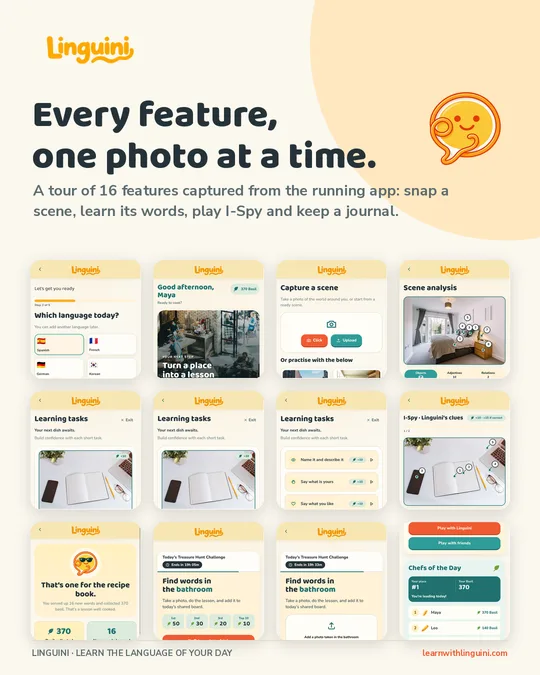
Every feature, one photo at a time.
Snap a scene, learn its words, practise real missions, play I-Spy with friends and keep a journal. Scroll down or jump to a feature.
You stay in charge · /practice/sessions/:id/analysis
Review what Linguini sees
Confirm the objects, colours and positions found in your photo before any lesson is built from them.
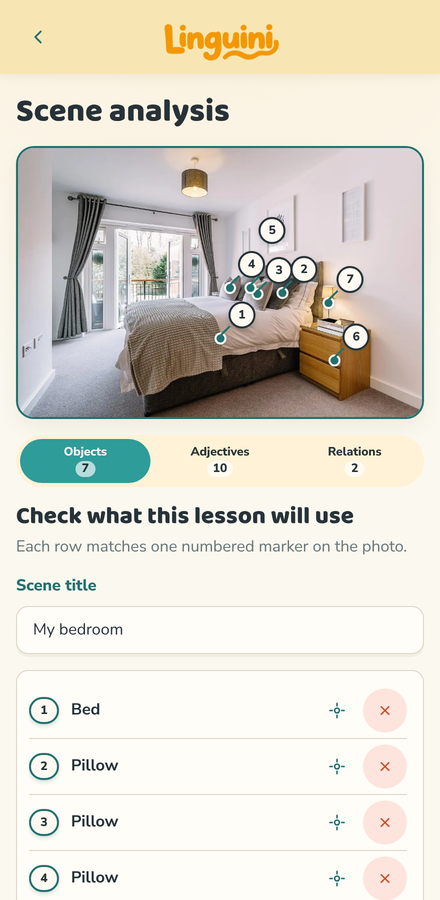
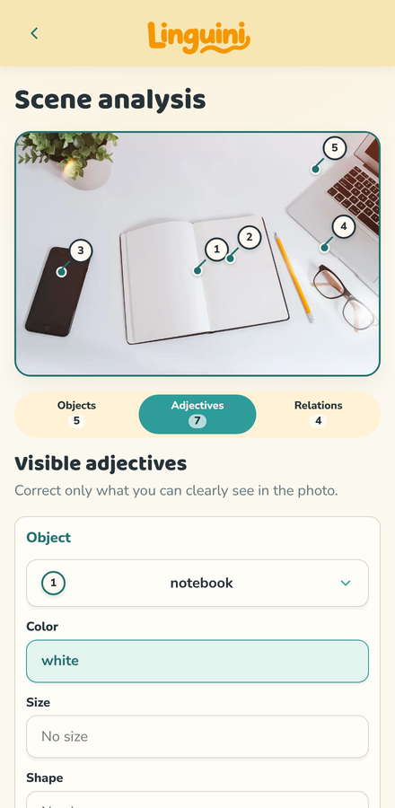
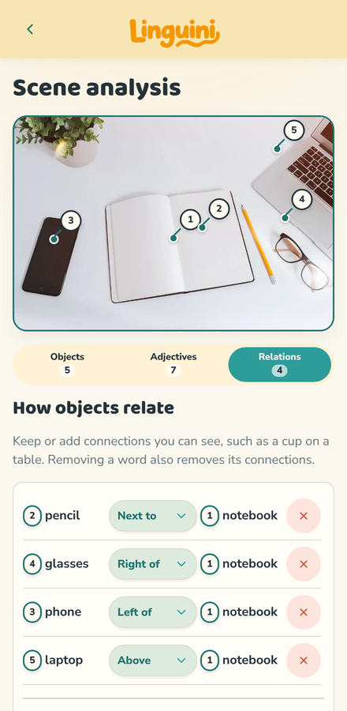
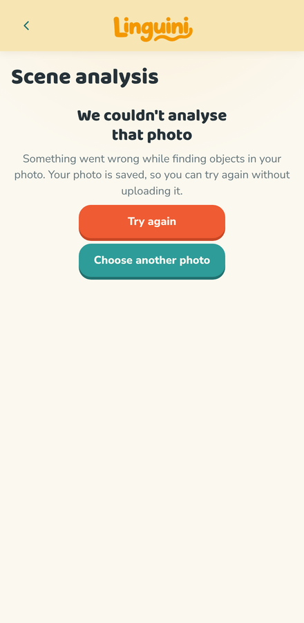

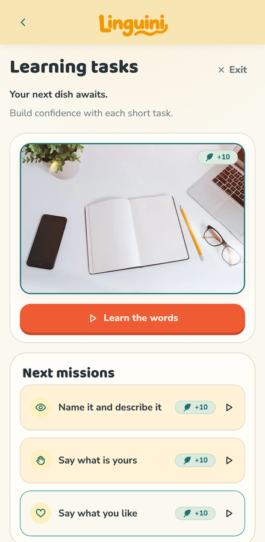
Learn the words · /practice/sessions/:id/learn
A lesson cooked from your photo
Every word comes from your own scene: preview it, flip the cards, quiz yourself and type it from memory.

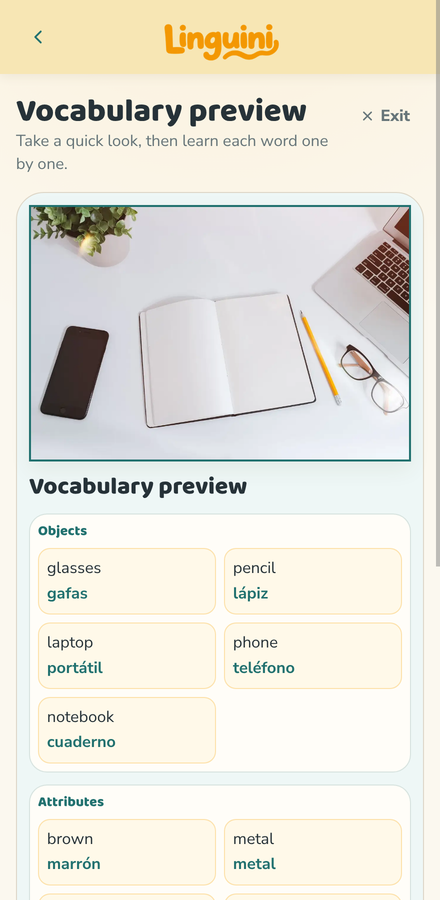
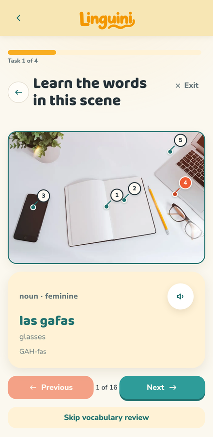
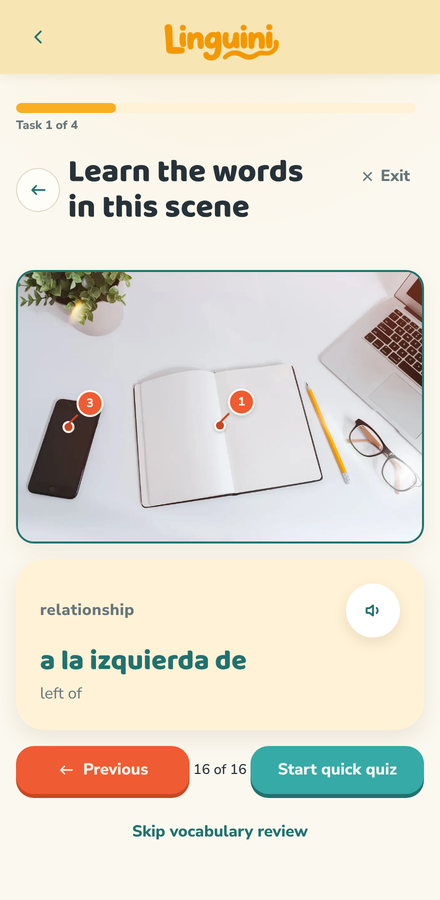
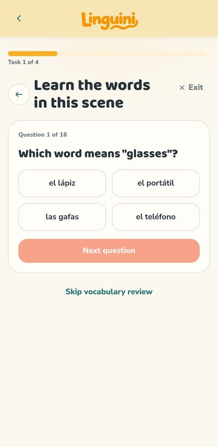
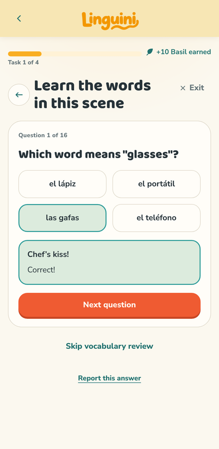
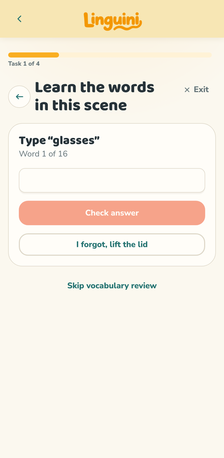
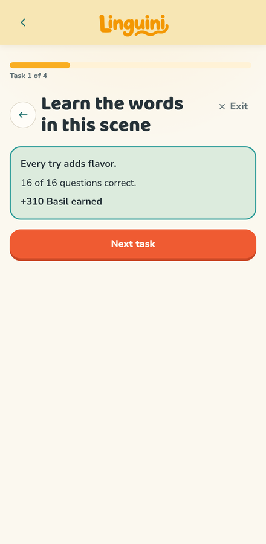
Play together ·
/ispy/challenge · /ispy/friends · /rooms/:idDaily challenge and friends
Everyone gets the same daily challenge, and friends rooms let you play I-Spy with people you invite.